Üst menüde yer alan «Aktivite» bölümünden «Rezervasyon» bölümüne giriniz.
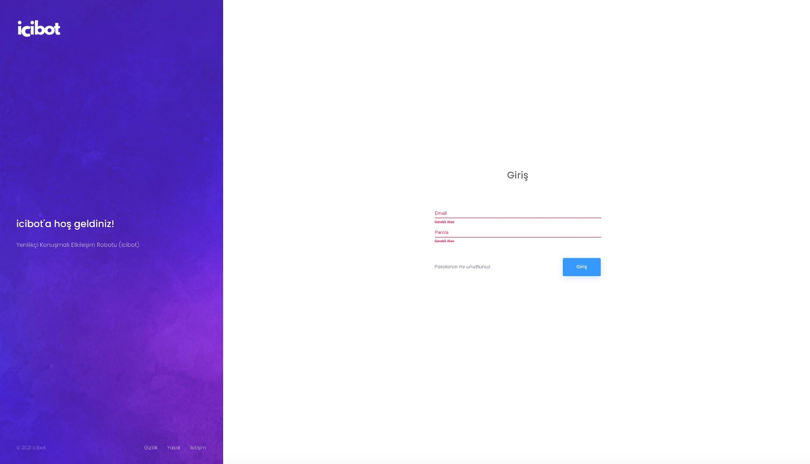İçerik girişlerinizi, misafir ve talep yönetiminizi yapabilmek için admin.icibot.app adresine giriniz. Mail adresiniz ile açılan kullanıcı bilgilerinizi girerek panele giriş yapınız.
Üst menüde yer alan «Aktivite» bölümünden «Rezervasyon» bölümüne giriniz
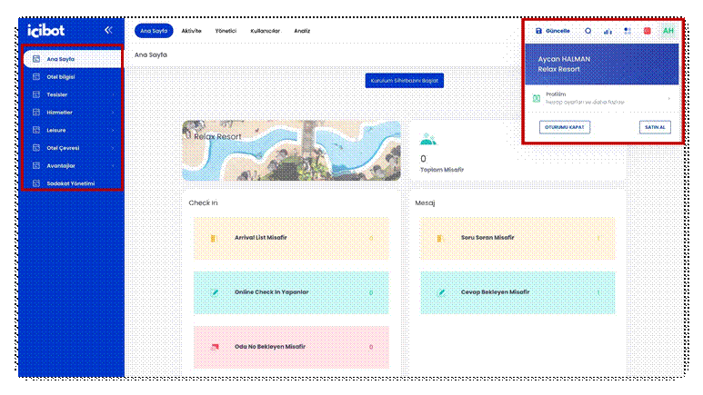Panele giriş yaptığınızda; sol menüde içerik girişlerinizi yapabileceğiniz alanları görebilirsiniz. Sağ üst menüde profil bilgilerinizi görebilirsiniz. *Yaptığınız her değişiklikten sonra GÜNCELLE butonuna tıklamayı unutmayın.
Üst menüde yer alan «Aktivite» bölümünden «Rezervasyon» bölümüne giriniz.
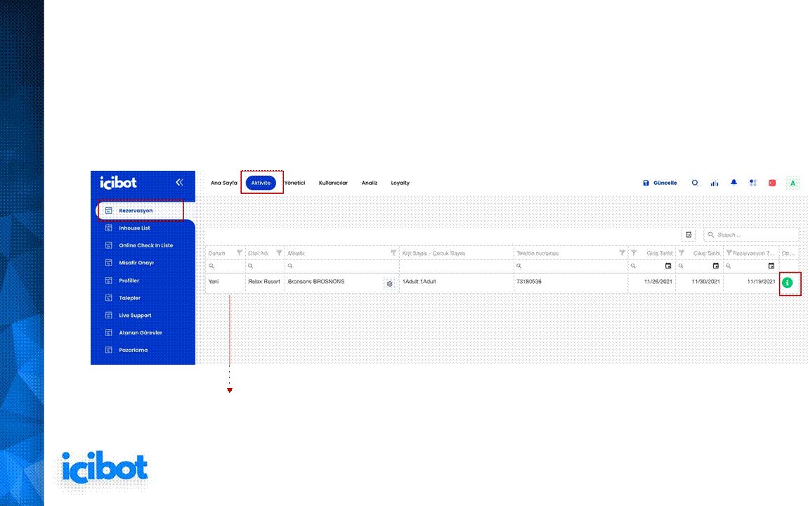Oda rezervasyonu taleplerinizi Aktiviteler>Rezervasyon başlığı altında görüntüleyebilirsiniz. Bu alanda talepte bulunan misafirin özet bilgileri yer almaktadır. Yeşil ikon ile işaretli info alanında iş emrinizin detaylarını görüntüleyebilirsiniz.
Üst menüde yer alan «Aktivite» bölümünden ilgili bölümüne giriniz
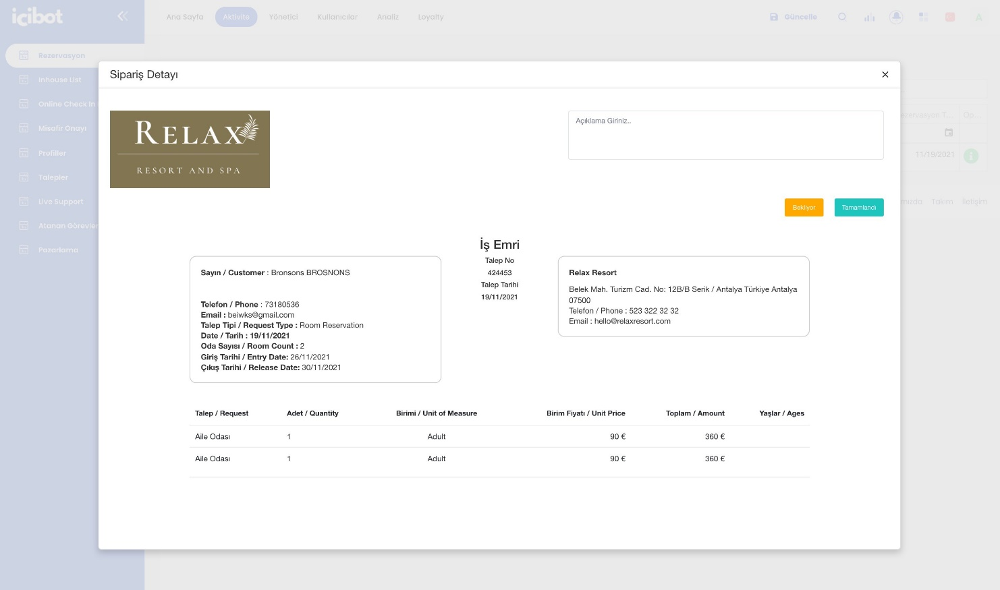Üst menüde yer alan «Aktivite» bölümünden «Inhouse List» bölümüne giriniz.
Üst menüde yer alan «Aktivite» bölümünden «Online Checkin Liste» bölümüne giriniz.
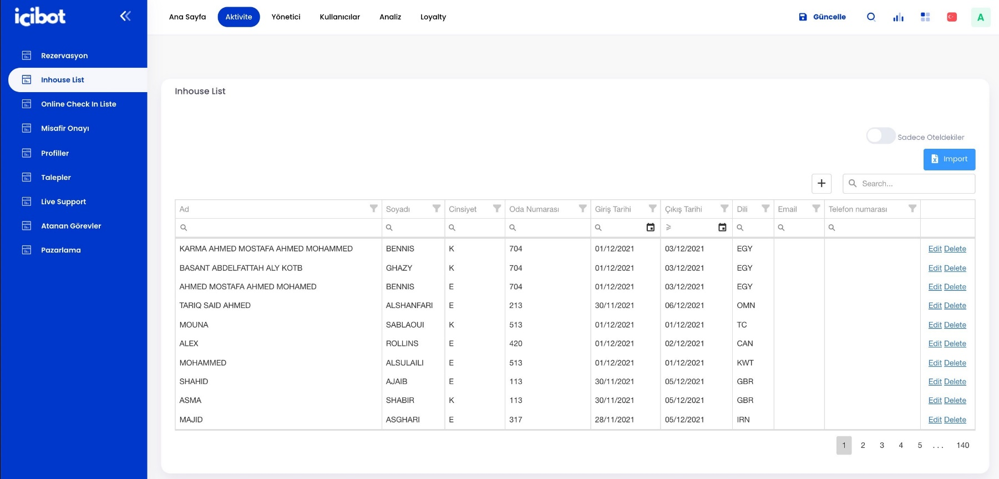Otelinize Online Check-in talebinde bulunan ve online check-in formunu dolduran misafirlerinizi bu alandan görüntüleyebilirsiniz. Misafirlerinizin özet bilgisini görüntüleyebilir dilerseniz DETAY alanından misafire dair detaylı bilgiyi görebilirsiniz.
Üst menüde yer alan «Aktivite» bölümünden «Online Checkin Liste» bölümüne giriniz. Online Check-in formunuzu dolduran misafirinizin odası hazır olduğunda HAZIR butonuna basarak misafire bilgisini verebilirsiniz. Misafirinize ait konaklama kartını da bu alandan görüntüleyebilirsiniz.
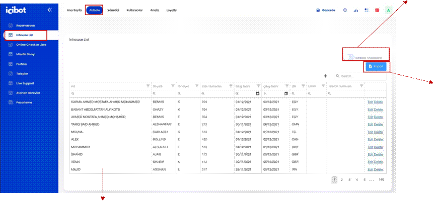Otelinizde Online Check-in talebinde bulunan ve online check-in formunu dolduran misafirlerinize ait detaylı bilgiyi görüntüleyebilirsiniz. Online Check-in formunuzda yer alan zorunlu bilgileri bu alanda görüntüleyebilirsiniz. Misafirinize ait Konaklama Kartı doğrudan sistem tarafından oluşturulur.
Üst menüde yer alan «Aktivite» bölümünden «Misafir Onayı» bölümüne giriniz.
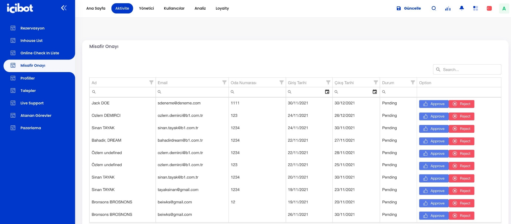Her yeni kayıt olan misafirinizi bu alanda görüntüleyebilirsiniz. Misafirlerinizin talep, istek, rezervasyon yapabilmesi için misafirlerinizi onaylamanız gerekmektedir
Üst menüde yer alan «Aktivite» bölümünden «Profiller» bölümüne giriniz
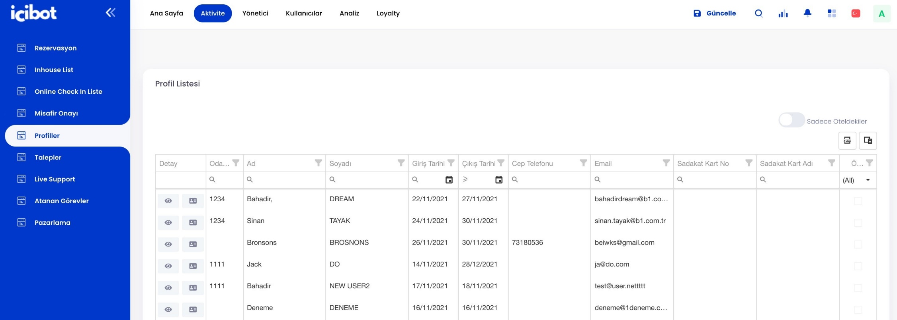Tüm kayıt yaptıran misafirlerinizin misafir profillerini bu alandan görüntüleyebilirsiniz. Misafirinizin konaklama kartı, isim soy isim, giriş çıkış tarihi, iletişim bilgilerini, sadakat kart bilgilerini görebilirsiniz
Üst menüde yer alan «Aktivite» bölümünden «Profiller» bölümüne giriniz
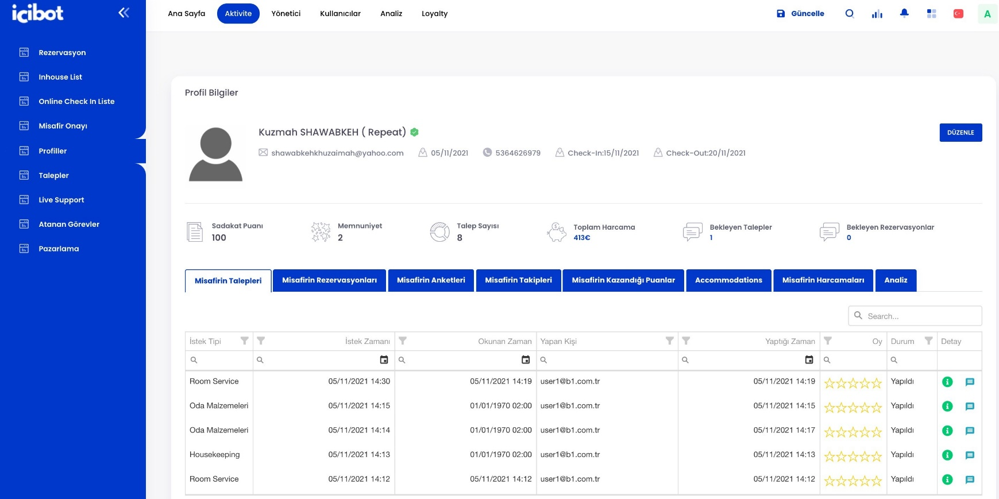Misafir profilinizin detayını incelediğinizde misafirinizin kişisel bilgilerini, daha önce otelinize gelip gelmediği bilgisini görebilirsiniz. Bu alanda; misafirinizin sadakat puanı, memnuniyet ortalaması, talep sayısı, otelinizde ne kadar harcama yaptığı, bekleyen taleplerini ve rezervasyonlarını görebilirsiniz. Ayrıca misafirinizin tüm taleplerini, rezervasyonlarını, takip ettiği alanlarınızı, kazandığı puanları, konaklamalarını, otel içi harcamalarını, otelinizde aldığı hizmetlerden sonra katıldığı anket puanlamalarını detaylı olarak görebilirsiniz.
Üst menüde yer alan «Aktivite» bölümünden «Talepler» bölümüne giriniz
Misafirlerinizden gelen tüm talepleri bu alanda görebilirsiniz. Misafirinizin oda numarası, telefon numarası, istek zamanı, istek tipi, talep durumu ve talebin iş emrini ve bu talep ile ilgili misafir ile görüşmeleri bu alanda görebilirsiniz. Misafirlerinizden gelen her yeni talep yeşil renk ile belirtilir ve bir personel talebi görüntülediğinde talep durumu görüldü, bekliyor, yapıldı olarak güncellenir.
Üst menüde yer alan «Aktivite» bölümünden «Canlı Destek» bölümüne giriniz
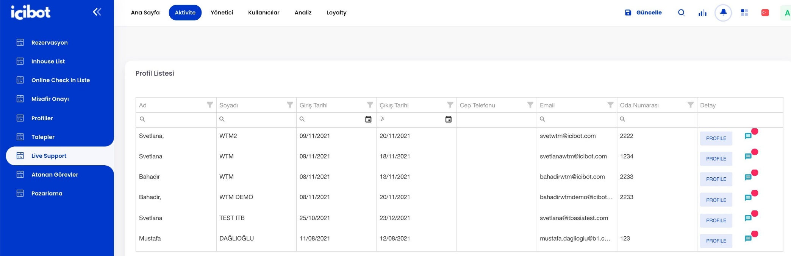Misafirlerinizden gelen tüm talep ve rezervasyonlar için canlı destek verebilirsiniz. Misafirleriniz ile anlık mesajlaşabilir, talepleri hakkında bilgi verebilirsiniz. Yazışmalarınızı otomatik çeviri özelliğini kullanarak misafirlerinizin kullandığı cihaz diline çevirebilirsiniz.
Üst menüde yer alan «Aktivite» bölümünden «Atanan Görevler» bölümüne giriniz.
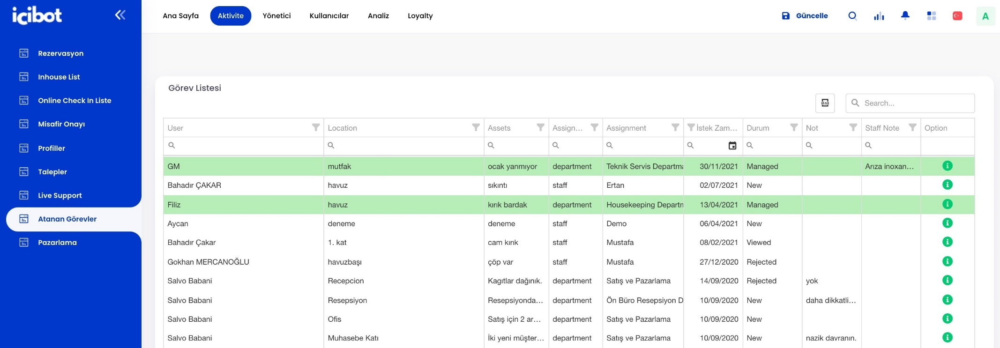StaffApp üzerinden departmanlar ve kişiler arası atanan görevleri Atanan Görevler bölümünde görebilirsiniz. Hangi kullanıcı hangi departmana hangi görevi atamış, bu görevin atanma tarihi, durumu, personelin notu gibi tüm bilgileri görebilirsiniz. Atanan görevin iş emrine dönüştürülmüş halini info alanından görüntüleyebilirsiniz.
Üst menüde yer alan «Aktivite» bölümünden «Atanan Görevler» bölümüne giriniz
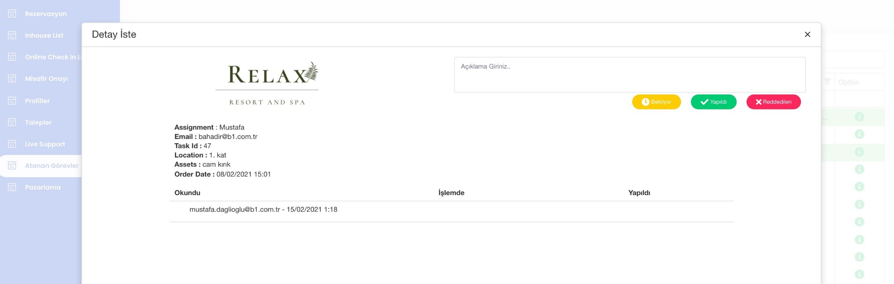StaffApp üzerinden departmanlar ve kişiler arası atanan görevlerin iş emrine dönüştürülmüş halini görebilirsiniz. Atanan göreve ait detaylı bilgiyi, okuyan, işleme alan, yapan kişi bilgisini ve bu göreve dair belirtilen açıklamayı detaylı bir şekilde görebilirsiniz.
Üst menüde yer alan «Aktivite» bölümünden «Pazarlama» bölümüne giriniz.
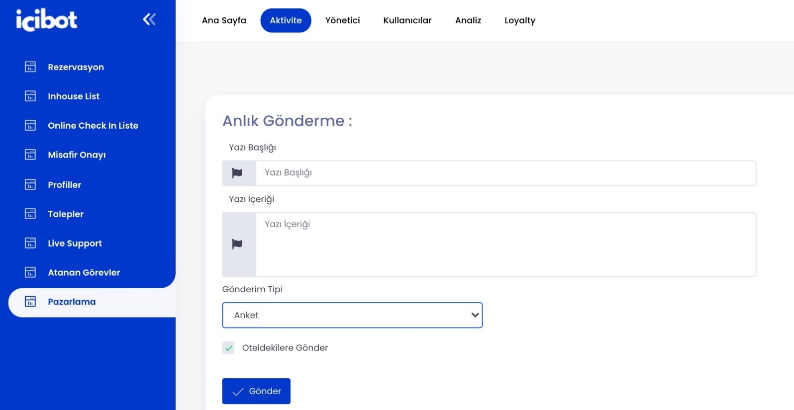StaffApp üzerinden departmanlar ve kişiler arası atanan görevlerin iş emrine dönüştürülmüş halini görebilirsiniz. Atanan göreve ait detaylı bilgiyi, okuyan, işleme alan, yapan kişi bilgisini ve bu göreve dair belirtilen açıklamayı detaylı bir şekilde görebilirsiniz.
Üst menüde yer alan «Aktivite» bölümünden «Pazarlama» bölümüne giriniz.
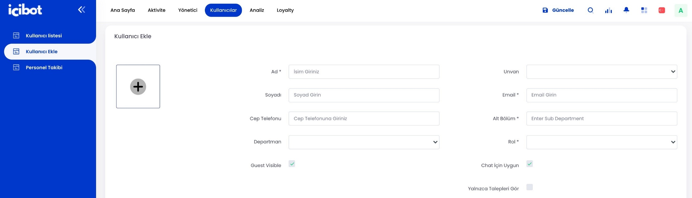Misafirlerinize gönderdiğiniz anlık bildirimlerin ve anketlerin detaylı sonucunu DETAY bölümünde görebilirsiniz. Misafirlerinize gönderdiğiniz bir anketin detayına baktığınızda; misafirinizi, misafir oda numarasını, anketinize verdiği oy ile mutlu veya mutsuz misafir olduğunu görebilirsiniz. Dilerseniz misafirinizin detaylı bilgisine PROFİLE GİT alanından ulaşabilirsiniz. Ayrıca misafirlerinize göndermiş olduğunuz anketin hafta, ay bazında toplam katılımcı ve ortalama puan durumunu görebilirsiniz. Misafirlerinize gönderdiğiniz bir bildirimin detayına baktığınızda; bildirimin gönderildiği kişi sayısı, tıklama sayısı ve bekleyen kişi sayısını görebilirsiniz.
Üst menüde yer alan «Kullanıcılar» bölümünden «Kullanıcı Listesi» bölümüne giriniz
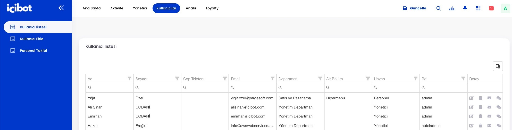Operasyonunuzu yönetirken otelinizde bulunan departman ve ilgili kişilerin tanımlamasını kullanıcılar bölümüne yapılması gerekmektedir. Sisteminize tanımlı olan departmanlara göre ilgili kişilerin bilgilerini, yetkilerini bu alanda görebilirsiniz. Ayrıca kullanıcıya ait detayı görebilir, mail veya SMS ile şifre gönderebilir, bir kullanıcıyı (yetkiniz varsa) listeden kaldırabilirsiniz.
Üst menüde yer alan «Kullanıcılar» bölümünden «Kullanıcı Ekle» bölümüne giriniz.
Eklemek istediğiniz kullanıcının isim soyisim, unvan, email, departman ve rol bilgisini sisteme girerek yeni kullanıcınızı oluşturabilirsiniz. Bu alanda dikkat edilmesi gereken konu; açtığınız kullanıcının misafirlere yazabilme yetkisini belirlemeniz (chat için uygun alanı), yalnızca gelen talepleri görme yetkisini belirlemeniz, her misafirin bilgisini görebilme yetkisini belirlemeniz (guest visible alanı)
Üst menüde yer alan «Kullanıcılar» bölümünden «Kullanıcı Ekle» bölümüne giriniz